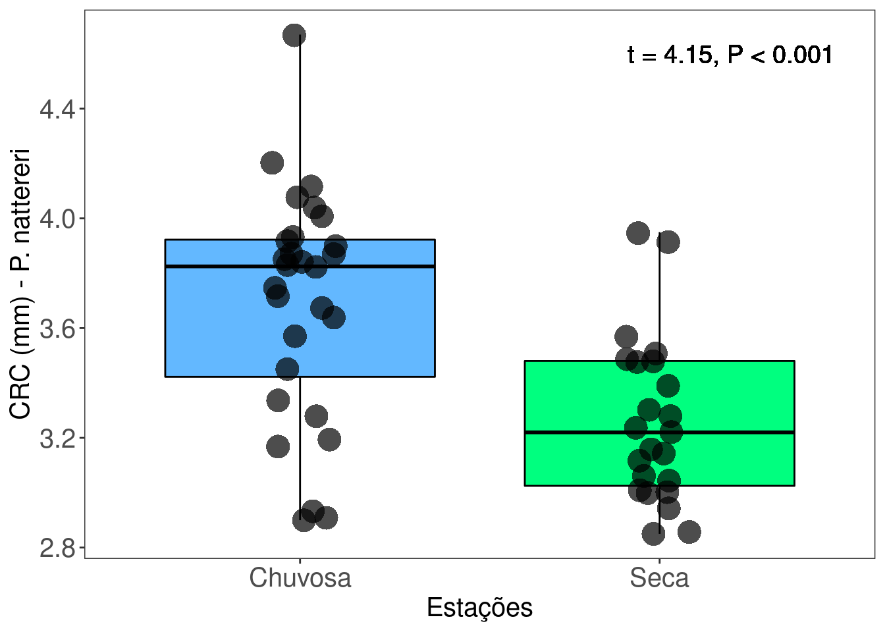
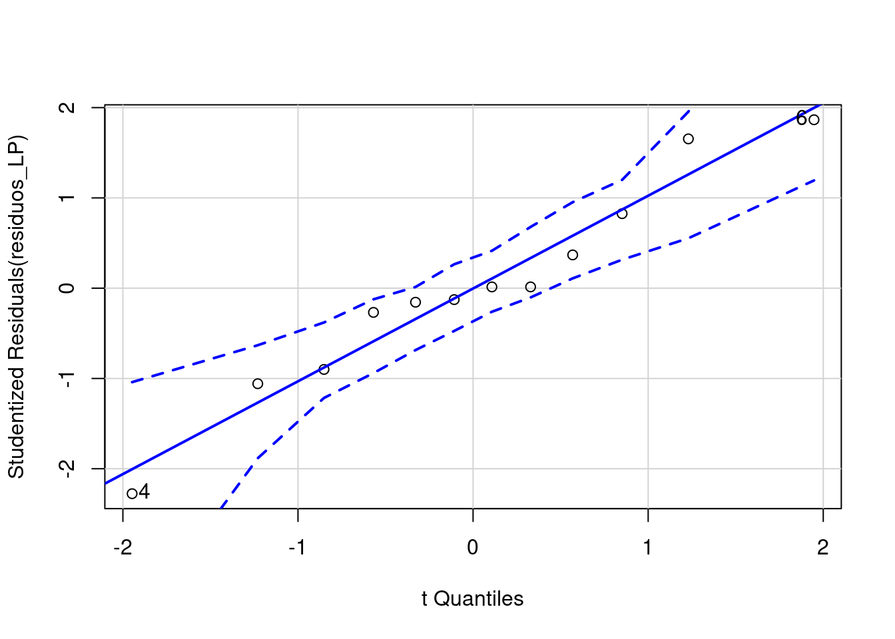
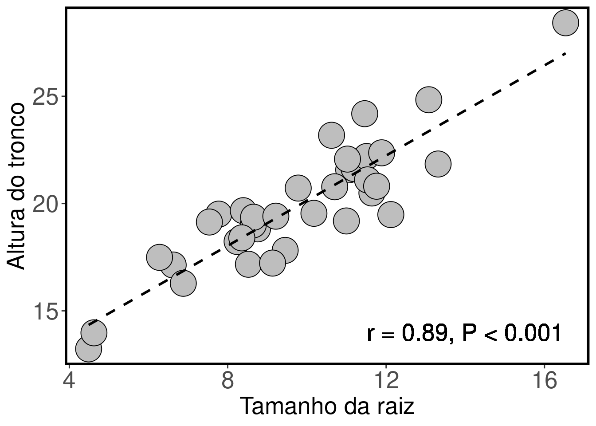
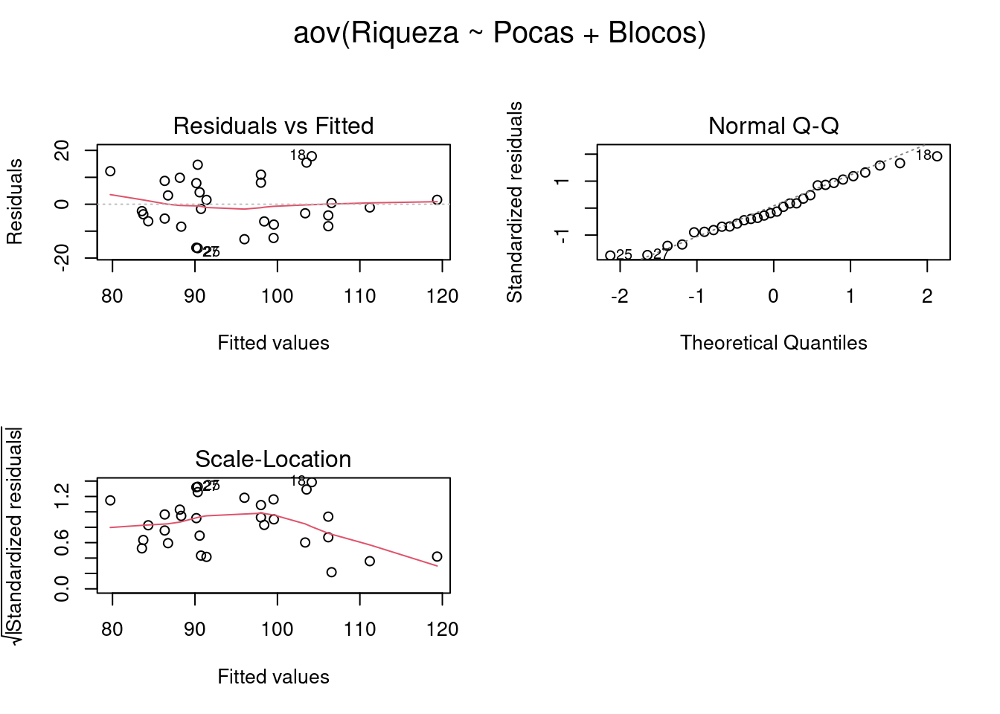

Capítulo 3 Estatística básica
3.1 Teste T (de Student) para duas amostras independentes
3.1.1 Background da análise
Uma das perguntas mais comum em estatística é saber se há diferença entre as médias de dois grupos ou tratamentos. Para responder esta pergunta, William Sealy Gosset, químico da cervejaria Guinness, em 1908 desenvolveu o Teste T que é uma estátistica que segue uma distribuição t de Student para rejeitar ou não uma hipótese nula de médias iguais entre os grupos.
\[ t = \frac{(\bar{X}_1 - \bar{X}_2)}{\sqrt{\frac{2S^2_p}{n}}}\]
Onde:
\(\bar{X}\)1 - \(\bar{X}\)2 = diferença entre as médias das duas amostras,
S2p = desvio padrão das amostras,
n = tamanho das amostras.
3.1.1 Premissas do Teste t :
- As amostras devem ser independentes;
- As unidades amostrais são selecionadas aleatoriamente;
- Distribuição normal (gaussiana) dos resíduos. Observação: Zar (2010, p. 136) indica que o Test T é robusto mesmo com moderada violação da normalidade, principalmente se o tamanho amostral for alto.
- Homogeneidade da variância. Observação. Caso as variâncias não sejam homogêneas, isso deve ser informado na linha de comando, pois o denominador da fórmula acima será corrigido.
3.1.1.1 Exemplo prático 1 - Teste T para duas amostras com variâncias iguais
3.1.1.1.1 Explicação dos dados
Neste exemplo avaliaremos o comprimento rostro-cloacal (CRC em milímetros) de machos de Physalaemus natteri (Anura:Leptodactylidae) amostrados em diferentes estações do ano com armadilhas de interceptação e queda na região noroeste do estado de São Paulo (da Silva & Rossa-Feres 2010).
Pergunta:
O CRC dos machos de P. nattereri é maior na estação chuvosa do que na estação seca?
Predições
O CRC dos machos será maior na estação chuvosa porque há uma vantangem seletiva para os indivíduos maiores durante a atividade reprodutiva.
Variáveis
- Variáveis preditoras
- Dataframe com os indivíduos (unidade amostral) nas linhas e CRC (mm - variável resposta contínua) e estação (variável preditora categórica) como colunas.
Checklist
- Verificar se o seu dataframe está com as unidades amostrais nas linhas e variáveis preditores nas colunas
3.1.2 Análise
Calculo do Teste T para duas amostras independentes com variâncias iguais
## IMPORTANDO OS DADOS
#************************
CRC_PN_macho <- ecodados::teste_t_var_igual
# verificar se o dataframe foi lido corretamente e se não há erros
# Esses comandos são úteis para planilhas grandes
head(CRC_PN_macho) # mostra as seis primeiras linhas da planilha## CRC Estacao
## 1 3.82 Chuvosa
## 2 3.57 Chuvosa
## 3 3.67 Chuvosa
## 4 3.72 Chuvosa
## 5 3.75 Chuvosa
## 6 3.83 Chuvosa## CRC Estacao
## 46 3.16 Seca
## 47 3.48 Seca
## 48 3.48 Seca
## 49 3.49 Seca
## 50 3.51 Seca
## 51 3.30 Seca# TESTE NORMALIDADE
#************************
## Verificando normalidade usando QQ-plot
## Os pontos não podem fugir da reta criando formas como U
residuos <- lm(CRC ~ Estacao, data = CRC_PN_macho)
library("car")
qqPlot(residuos)
## [1] 22 26## Outra possibilidade é usar o teste de Shapiro-Wilk para verificar normalidade
## Hipótese nula que a distribuição é normal
## valor de p < 0.05 significa que os dados não apresentam distribuição normal
## valor de p > 0.05 significa que os dados apresentam distribuição normal
shapiro.test (CRC_PN_macho$CRC) ##
## Shapiro-Wilk normality test
##
## data: CRC_PN_macho$CRC
## W = 0.95559, p-value = 0.05417# TESTE DE HOMOGENEIDADE DA VARIÂNCIA
#***************************************
## Hipótese nula que a variância é homogênea
## valor de p < 0.05 significa que os dados não apresentam homogeneidade
## valor de p > 0.05 significa que os dados apresentam homogeneidade
library(car)
leveneTest(CRC ~ Estacao, data = CRC_PN_macho)## Levene's Test for Homogeneity of Variance (center = median)
## Df F value Pr(>F)
## group 1 1.1677 0.2852
## 49# TESTE T AMOSTRAS INDEPENDENTES E VARIÂNCIAS IGUAIS
#******************************************************888
t.test(CRC ~ Estacao, data = CRC_PN_macho, var.equal = TRUE)##
## Two Sample t-test
##
## data: CRC by Estacao
## t = 4.1524, df = 49, p-value = 0.000131
## alternative hypothesis: true difference in means is not equal to 0
## 95 percent confidence interval:
## 0.2242132 0.6447619
## sample estimates:
## mean in group Chuvosa mean in group Seca
## 3.695357 3.260870Visualizar os resultados em gráfico
library(ggplot2)
ggplot(data = CRC_PN_macho, aes(x= Estacao, y= CRC, color = Estacao)) +
labs(x = "Estações", y = "CRC (mm) - P. nattereri", size = 15) +
geom_boxplot(fill=c("steelblue1", "springgreen1"), color="black", outlier.shape = NA) +
geom_jitter(shape = 16, position=position_jitter(0.1), cex = 6, alpha = 0.7) +
scale_color_manual(values = c("black", "black")) +
geom_text(x = 2.2, y = 4.6, label = "t = 4.15, P < 0.001", color = "black", size = 5) +
theme_bw() +
theme(axis.text.y = element_text(size = 15), axis.text.x = element_text(size = 15)) +
theme(axis.title.y = element_text(size = 15), axis.title.x = element_text(size = 15)) +
theme(panel.grid.major = element_blank(), panel.grid.minor = element_blank()) +
theme(legend.position = "none")
Interpretação dos resultados
Neste exemplo, rejeitamos a hipótese nula que as médias do CRC dos machos entre as estações seca e chuvosa são iguais (t = 4,15, P < 0,001). Os resultados mostram que os machos de P. nattereri coletados na estação chuvosa foram em média 0,43mm maiores do que os coletados na estação seca.
3.1.2.1 Exemplo prático 2 - Teste T para duas amostras independentes com variâncias diferentes
3.1.2.1.1 Explicação dos dados
Neste exemplo, avaliaremos o comprimento rostro-cloacal (CRC - milímetros) de fêmeas de Leptodactylus podicipinus amostradas em diferentes estações do ano com armadilhas de interceptação e queda na região noroeste do estado de São Paulo (da Silva & Rossa-Feres 2010). Observação: Os dados foram alterados em relação a publicação original para se enquadrarem no exemplo de amostras com variâncias diferentes.
Pergunta:
O CRC das fêmeas de L. podicipinus é maior na estação chuvosa do que na estação seca?
Predições
O CRC das fêmeas será maior na estação chuvosa porque há uma vantangem seletiva para os indivíduos maiores durante a atividade reprodutiva.
Variáveis
- Variáveis preditoras
- Dataframe com os indivíduos (unidade amostral) nas linhas e CRC (mm - variável resposta contínua) e estação (variável preditora categórica) como colunas.
Checklist
- Verificar se o seu dataframe está com as unidades amostrais nas linhas e variáveis preditores nas colunas
3.1.3 Análise
Calculo do Teste T para duas amostras com variâncias diferentes
## IMPORTANDO OS DADOS
#*************************
CRC_LP_femea <- ecodados::teste_t_var_diferente
head(CRC_LP_femea) # verificar se o dataframe foi lido corretamente## CRC Estacao
## 1 2.72 Chuvosa
## 2 2.10 Chuvosa
## 3 3.42 Chuvosa
## 4 1.50 Chuvosa
## 5 3.90 Chuvosa
## 6 4.00 Chuvosa# TESTE NORMALIDADE
#************************
## Verificando normalidade usando QQ-plot
## Os pontos não podem fugir da reta criando formas como U
residuos_LP <- lm(CRC ~ Estacao, data = CRC_LP_femea)
library("car")
qqPlot(residuos_LP)
## [1] 4 6## Outra possibilidade é usar o teste de Shapiro-Wilk para verificar normalidade
## Hipótese nula que a distribuição é normal
## valor de p < 0.05 significa que os dados não apresentam distribuição normal
## valor de p > 0.05 significa que os dados apresentam distribuição normal
shapiro.test (CRC_LP_femea$CRC) ##
## Shapiro-Wilk normality test
##
## data: CRC_LP_femea$CRC
## W = 0.88195, p-value = 0.09284# TESTE DE HOMOGENEIDADE DA VARIÂNCIA
#***************************************
## Hipótese nula que a variância é homogênea
## valor de p < 0.05 significa que os dados não apresentam homogeneidade
## valor de p > 0.05 significa que os dados apresentam homogeneidade
library(car)
leveneTest(CRC ~ Estacao, data = CRC_LP_femea)## Levene's Test for Homogeneity of Variance (center = median)
## Df F value Pr(>F)
## group 1 9.8527 0.01053 *
## 10
## ---
## Signif. codes: 0 '***' 0.001 '**' 0.01 '*' 0.05 '.' 0.1 ' ' 1# TESTE T COM AMOSTRAS INDEPENDENTES E VARIÂNCIS DIFERENTES
#***********************************************************
## Com base no teste de Levene, avise na linha de comando que as variâncias
## não são iguais (var.equal = FALSE).
t.test(CRC ~ Estacao, data = CRC_LP_femea, var.equal = FALSE)##
## Welch Two Sample t-test
##
## data: CRC by Estacao
## t = -1.7633, df = 6.4998, p-value = 0.1245
## alternative hypothesis: true difference in means is not equal to 0
## 95 percent confidence interval:
## -1.5489301 0.2375016
## sample estimates:
## mean in group Chuvosa mean in group Seca
## 2.834286 3.490000Visualizar os resultados em gráfico
library(ggplot2)
ggplot(data = CRC_LP_femea, aes(x= Estacao, y= CRC, color = Estacao)) +
labs(x = "Estações", y = "CRC (mm) - L. podicipinus", size = 15) +
geom_boxplot(fill=c("steelblue1", "springgreen1"), color="black", outlier.shape = NA) +
geom_jitter(shape = 16, position=position_jitter(0.1), cex = 6, alpha = 0.7) +
scale_color_manual(values = c("black", "black")) +
geom_text(x = 2.2, y = 1.7, label = "t = 1.76, P = 0.12", color = "black", size = 5) +
theme_bw() +
theme(axis.text.y = element_text(size = 15), axis.text.x = element_text(size = 15)) +
theme(axis.title.y = element_text(size = 15), axis.title.x = element_text(size = 15)) +
theme(panel.grid.major = element_blank(), panel.grid.minor = element_blank()) +
theme(legend.position = "none")
Interpretação dos resultados
Neste exemplo, não rejeitamos a hipótese nula e consideramos que as médias do CRC das fêmeas entre as estações seca e chuvosa são iguais (t = 1,76, P = 0,12). Os resultados mostram que as fêmeas de L. podicipinus coletadas na estação chuvosa não são maiores do que as fêmeas coletadas na estação seca.
3.2 Teste T para amostras pareadas
3.2.1 Background da análise
O Teste T Pareado é uma estatística que usa dados medidos duas vezes na mesma unidade amostral, resultando em pares de observações para cada amostra (amostras pareadas). Ele determina se a diferença da média entre duas observações é zero.
\[ t = \frac{\bar{d}}{S_{\bar{d}}}\]
Onde:
\(\bar{d}\) = média da diferença das medidas pareadas. Observe que o teste não usa as medidas originais, e sim, a diferença para cada par,
S\(\bar{d}\) = erro padrão da diferença das medidas pareadas.
3.2.1 Premissas do Teste t para amostras pareadas:
- As unidades amostrais são selecionadas aleatoriamente;
- Distribuição normal (gaussiana) dos valores da diferença para cada par;
3.2.1.1 Exemplo prático 1 - Teste T para amostras pareadas
3.2.1.1.1 Explicação dos dados
Neste exemplo avaliaremos a diferença na riqueza de espécies de artrópodes registradas em 27 localidades. Todas as localidades foram amostradas duas vezes. A primeira amostragem foi realizada com na localidade antes da pertubação e a segunda amostragem foi realizada após a localidade ter sofrido uma queimada.
Pergunta:
A riqueza de espécies de artrópodes é prejudicada pelas queimadas?
Predições
A riqueza de espécies de artrópodes será maior antes da queimada devido a extinção local das espécies.
Variáveis
- Variáveis preditoras
- Dataframe com as localidades nas linhas e riqueza de espécies (variável preditora contínua) e estado (Pre-queimada ou Pós-queimada - variável categórica) da localidade nas colunas.
Checklist
- Verificar se o seu dataframe está com as unidades amostrais nas linhas e variáveis preditores nas colunas
3.2.2 Análise
Calculo do Teste T com amostras pareadas
## IMPORTANDO OS DADOS
#*************************
Pareado <- ecodados::teste_t_pareado
head(Pareado) # verificar se o dataframe foi lido corretamente## Areas Riqueza Estado
## 1 1 92 Pre-Queimada
## 2 2 74 Pre-Queimada
## 3 3 96 Pre-Queimada
## 4 4 89 Pre-Queimada
## 5 5 76 Pre-Queimada
## 6 6 80 Pre-Queimada## Areas Riqueza Estado
## 49 22 37 Pos-Queimada
## 50 23 20 Pos-Queimada
## 51 24 12 Pos-Queimada
## 52 25 22 Pos-Queimada
## 53 26 27 Pos-Queimada
## 54 27 28 Pos-Queimada# TESTE T PAREADO
#*****************
# O uso do [] é para selecionar dentro do vetor/coluna *Riqueza* os 27 primeiros números [1:27] que representam as localidades antes da queimada e os últimos 27 números [28:54] que representam as mesmas localidades pós-queimada
t.test(Pareado$Riqueza[1:27], Pareado$Riqueza[28:54], paired = TRUE)##
## Paired t-test
##
## data: Pareado$Riqueza[1:27] and Pareado$Riqueza[28:54]
## t = 7.5788, df = 26, p-value = 4.803e-08
## alternative hypothesis: true difference in means is not equal to 0
## 95 percent confidence interval:
## 32.47117 56.63994
## sample estimates:
## mean of the differences
## 44.55556Visualizar os resultados em gráfico
library("ggpubr")
ggpaired(Pareado, x = "Estado", y = "Riqueza",
color = "Estado", line.color = "gray", line.size = 0.8, palette = "jco", width = 0.8,
point.size = 3, xlab = "Estado das localidades", ylab = "Riqueza de Espécies") +
expand_limits(y=c(0,150)) 
Interpretação dos resultados
Neste exemplo, rejeitamos a hipótese nula que a riqueza de espécies de artrópodes é igual antes e depois da queimada (t = 7,57, P < 0,001). Os resultados mostram que as localidades após as queimadas apresentam em média 44,5 espécies de artrópodes a menos do que antes das queimadas.
3.3 Correlação de Pearson
3.3.1 Background da análise
É um teste que mede a o grau de associação entre duas variáveis contínuas (X e Y). Importante ressaltar que a análise de correlação não assume que a variável X influêncie a variável Y ou que exista uma relação de causa e efeito entre elas (Zar 2016). A análise é definida em termos da variância de X, a variância de Y, e a covariância de X e Y (i.e. como elas variam juntas).
\[ r = \frac{\sum{XY} - \frac{\sum{X} \sum{Y}}{n}}{\sqrt{\left(\sum{X^2} - \frac{\sum{X}^2}{n}\right)\left(\sum{Y^2} - \frac{\sum{Y}^2}{n}\right)}} \]
Onde:
- r = coeficiente de correlação que indica a força da relação entre as duas variáveis. Seu range de valores está entre -1 \(\leq\) r \(\geq\) 1. A correlação positiva indica que o aumento no valor de uma das variáveis é acompanhado pelo aumento no valor da outra variável. A correlação negativa indica que um aumento no valor de uma das variáveis é acompanhado pela diminuição no valor da outra variável. Se r é igual a zero, não existe correlação entre as variáveis.
3.3.1 Premissas da Correlação de Person:
- As amostras devem ser independentes e pareadas (i.e. as duas variáveis devem ser medidas na mesma unidade amostral);
- As unidades amostrais são selecionadas aleatoriamente;
- A relação entre as variáveis tem que ser linear.
3.3.1.1 Exemplo prático 1 - Correlação de Pearson
3.3.1.1.1 Explicação dos dados
Neste exemplo avaliaremos a correlação entre a altura do tronco e o tamanho da raiz medidos em 35 indivíduos de uma espécie vegetal arbustiva.
Pergunta:
Existe correlação entre a altura do tronco e o tamanho da raiz dos arbustos?
Predições
A altura do tronco é positivamente correlacionado com o tamanho da raiz.
Variáveis
- Variáveis preditoras
- Dataframe com os indivíduos (unidade amostral) nas linhas e altura do tronco e tamanho da raiz (duas variáveis tem que ser contínuas) como colunas.
Checklist
- Verificar se o seu dataframe está com as unidades amostrais nas linhas e variáveis preditores nas colunas
3.3.2 Análise
Calculo do Teste de Correlação de Pearson
## IMPORTANDO OS DADOS
#************************
correlacao_arbustos <- ecodados::correlacao
head(correlacao_arbustos) # verificar se o dataframe foi lido corretamente## Tamanho_raiz Tamanho_tronco
## 1 10.177049 19.54383
## 2 6.622634 17.13558
## 3 7.773629 19.50681
## 4 11.055257 21.57085
## 5 4.487274 13.22763
## 6 11.190216 21.62902# Teste de Correlação de Pearson
#********************************
# Para outros testes de correlação como Kendall ou Spearman é só alterar na linha de comando a opção *method* e inserir o teste desejado.
cor.test(correlacao_arbustos$Tamanho_raiz, correlacao_arbustos$Tamanho_tronco, method = "pearson")##
## Pearson's product-moment correlation
##
## data: correlacao_arbustos$Tamanho_raiz and correlacao_arbustos$Tamanho_tronco
## t = 11.49, df = 33, p-value = 4.474e-13
## alternative hypothesis: true correlation is not equal to 0
## 95 percent confidence interval:
## 0.7995083 0.9457816
## sample estimates:
## cor
## 0.8944449Visualizar os resultados em gráfico
library(ggplot2)
ggplot(data = correlacao_arbustos, aes(x= Tamanho_raiz, y= Tamanho_tronco)) +
labs(x = "Tamanho da raiz", y = "Altura do tronco", size = 20) +
geom_point(size = 10, shape = 21, fill = "gray") +
geom_text(x = 14, y = 14, label = "r = 0.89, P < 0.001", color = "black", size = 7) +
theme_bw() +
theme(axis.title.y = element_text(size = 20), axis.title.x = element_text(size = 20)) +
theme(axis.text.y = element_text(size = 20), axis.text.x = element_text(size = 20)) +
theme(panel.grid.major = element_blank(), panel.grid.minor = element_blank(),
panel.border = element_rect(colour = "black", fill=NA, size = 2)) +
geom_smooth(method = lm, se = FALSE, color = "black", linetype="dashed") 
Interpretação dos resultados
Neste exemplo, rejeitamos a hipótese nula que as variáveis não são correlacionadas (r = 0.89, P < 0,001). Os resultados mostram que o aumento na altura dos arbutos é acompanhado pelo aumento no tamanho da raiz.
3.4 Regressão Linear Simples
3.4.1 Background da análise
A regressão simples é usada para analisar a relação entre uma variável preditora (plotada no eixo-X) e uma variável resposta (plotada no eixo-Y). As duas variáveis devem ser contínuas. Diferente das correlações, a regressão assume uma relação de causa e efeito entre as variáveis. O valor da variável preditora (X) causa, direta ou indiretamente, o valor da variável resposta (Y). Assim, Y é uma função linear de X:
\[ Y = \beta_0 + \beta_{1}X_i + \epsilon_i \]
Onde:
\(\beta_0\) = intercepto que representa o valor da função quando X = 0,
\(\beta_{1}\) = inclinação (slope) que mede a mudança na variável Y para cada mudança de unidade da variável X. Este parâmetro é usado para testar a hipótese nula da regressão que assume que \(\beta_{1}\) = 0.
\(\epsilon_{1}\) = erro aleatório referente a variável Y que não pode ser explicado pela variável X.
3.4.1 Premissas da Regressão Linear Simples:
- As amostras devem ser independentes;
- As unidades amostrais são selecionadas aleatoriamente;
- Distribuição normal (gaussiana) dos resíduos;
- Homogeneidade da variância.
3.4.1.1 Exemplo prático 1 - Regressão linear simples
3.4.1.1.1 Explicação dos dados
Neste exemplo, avaliaremos a relação entre o gradiente de temperatura média anual (°C) e o tamanho médio do comprimento rostro-cloacal (CRC em mm) de populações de Dendropsophus minutus (Anura:Hylidae) amostradas em 109 localidades no Brasil (Boaratti & da Silva 2015).
Pergunta:
Há relação entre o tamanho do CRC das populações e a temperatura das localidades onde os indivíduos ocorrem?
Predições
O CRC das populações serão menores em localidades mais quentes do que em localidades mais frias de acordo com a Hipótese do balanço de calor.
Variáveis
- Variáveis preditoras
- Dataframe com as populações (unidade amostral) nas linhas e CRC médio (mm) e temperatura média anual como colunas.
Checklist
- Verificar se o seu dataframe está com as unidades amostrais nas linhas e variáveis preditores nas colunas
3.4.2 Análise
Calculo da regressão linear simples
## IMPORTANDO DADOS
#********************
dados_regressao <- ecodados::regressoes
head(dados_regressao) # verificar se o dataframe foi lido corretamente## Municipio CRC Temperatura Precipitacao
## 1 Acorizal 22.98816 24.13000 1228.2
## 2 Alpinopolis 22.91788 20.09417 1487.6
## 3 Alto_Paraiso 21.97629 21.86167 1812.4
## 4 Americana 23.32453 20.28333 1266.2
## 5 Apiacas 22.83651 25.47333 2154.0
## 6 Arianopolis 20.86989 20.12167 1269.2# ANALISE DA REGRESSÃO
#************************
modelo_regressao <- lm(CRC ~ Temperatura, data = dados_regressao)
# PRIMEIRO VAMOS VERIFICAR A NORMALIDADE E HOMOGENEIDADE DAS VARIÂNCIAS
#***********************************************************************
# Os gráficos *Residuals vs Fitted*, *Scale-Location*, e *Residual vs Leverage* estão relacionados com a homogeneidade da variância. Nestes gráficos, esperamos ver os pontos dispersos no espaço sem padrões com formatos em *U* ou funil.
# O gráfico *Normal Q-Q* está relacionado com a distribuição normal dos resíduos. Neste gráfico, esperamos ver os pontos próximos a reta sem padrões com formatos em *U* ou *S*.
par(mfrow = c(2, 2), oma = c(0, 0, 2, 0))
plot(modelo_regressao)
## null device
## 1# VERIFICANDO OS RESULTADOS DA REGRESSÃO
#****************************************
anova(modelo_regressao)## Analysis of Variance Table
##
## Response: CRC
## Df Sum Sq Mean Sq F value Pr(>F)
## Temperatura 1 80.931 80.931 38.92 9.011e-09 ***
## Residuals 107 222.500 2.079
## ---
## Signif. codes: 0 '***' 0.001 '**' 0.01 '*' 0.05 '.' 0.1 ' ' 1# ou
# esta função apresenta os resultados mais detalhados com a estimativa do intercepto, inclinação da reta (slope) e o coeficiente de determinação (R2) que indica a proporção da variação na variável Y que pode ser atribuída à variação na variável X.
summary(modelo_regressao)##
## Call:
## lm(formula = CRC ~ Temperatura, data = dados_regressao)
##
## Residuals:
## Min 1Q Median 3Q Max
## -3.4535 -0.7784 0.0888 0.9168 3.1868
##
## Coefficients:
## Estimate Std. Error t value Pr(>|t|)
## (Intercept) 16.23467 0.91368 17.768 < 2e-16 ***
## Temperatura 0.26905 0.04313 6.239 9.01e-09 ***
## ---
## Signif. codes: 0 '***' 0.001 '**' 0.01 '*' 0.05 '.' 0.1 ' ' 1
##
## Residual standard error: 1.442 on 107 degrees of freedom
## Multiple R-squared: 0.2667, Adjusted R-squared: 0.2599
## F-statistic: 38.92 on 1 and 107 DF, p-value: 9.011e-09Visualizar os resultados em gráfico
library(ggplot2)
ggplot(data = dados_regressao, aes(x= Temperatura, y= CRC)) +
labs(x = "Temperatura média anual (°C)", y = "Comprimento rostro-cloacal (mm)", size = 20) +
geom_point(size = 10, shape = 21, fill = "gray") +
geom_text(x = 25, y = 17.8, label = "R2 = 0.26, P < 0.001", color = "black", size = 7) +
theme_bw() +
theme(axis.title.y = element_text(size = 20), axis.title.x = element_text(size = 20)) +
theme(axis.text.y = element_text(size = 20), axis.text.x = element_text(size = 20)) +
theme(panel.grid.major = element_blank(), panel.grid.minor = element_blank(),
panel.border = element_rect(colour = "black", fill=NA, size = 2)) +
geom_smooth(method = lm, se = FALSE, color = "black") 
Interpretação dos resultados
Neste exemplo, rejeitamos a hipótese nula que não existe relação entre o tamanho do CRC das populações de D. minutus e a temperatura da localidade onde elas ocorrem (F1,107 = 38,92, P < 0,001). Os resultados mostram que o tamanho do CRC das populações tem uma relação positiva com a temperatura das localidades. Assim, populações de D. minutus em localidades mais quentes apresentam maior CRC do que as populações em localidades mais frias.
3.5 Regressão Linear Múltipla
3.5.1 Background da análise
A regressão múltipla é uma extensão da regressão simples. Ela é usada quando queremos determinar o valor da variável resposta (Y) com base nos valores de duas ou mais variáveis preditoras (X1, X2, Xn).
\[ Y = \beta_0 + \beta_{1}X_1 + \beta_{n}X_n + \epsilon_i \]
Onde:
\(\beta_0\) = intercepto que representa o valor da função quando X = 0;
\(\beta_{n}\) = inclinação (slope) que mede a mudança na variável Y para cada mudança de unidade das variáveis Xn;
\(\epsilon_{1}\) = erro aleatório referente a variável Y que não pode ser explicado pelas variáveis preditoras.
3.5.1 Premissas da Regressão Linear Múltipla:
- As amostras devem ser independentes;
- As unidades amostrais são selecionadas aleatoriamente;
- Distribuição normal (gaussiana) dos resíduos;
- Homogeneidade da variância.
3.5.1.1 Exemplo prático 1 - Regressão linear múltipla
3.5.1.1.1 Explicação dos dados
Utilizaremos o mesmo exemplo da regressão simples. Contudo, além do gradiente de temperatura média anual (°C) incluiremos o gradiente de precipitação anual (mm) como outra variável preditora do tamanho médio do comprimento rostro-cloacal (CRC em mm) de populações de Dendropsophus minutus (Anura:Hylidae) amostradas em 109 localidades no Brasil (Boaratti & da Silva 2015).
Pergunta:
O tamanho do CRC das populações de D. minutus é influênciado pela temperatura e precipitação das localidades onde os indivíduos ocorrem?
Predições
O CRC das populações serão menores em localidades com clima quente e chuvoso do que em localidades com clima frio e seco.
Variáveis
- Variáveis preditoras
- Dataframe com as populações (unidade amostral) nas linhas e CRC médio (mm) e temperatura e precipitação como colunas.
Checklist
- Verificar se o seu dataframe está com as unidades amostrais nas linhas e variáveis preditores nas colunas
3.5.2 Análise
Cálculo da regressão linear múltipla
## IMPORTANDO DADOS
#********************
dados_regressao_mul <- ecodados::regressoes
head(dados_regressao_mul) # verificar se o dataframe foi lido corretamente## Municipio CRC Temperatura Precipitacao
## 1 Acorizal 22.98816 24.13000 1228.2
## 2 Alpinopolis 22.91788 20.09417 1487.6
## 3 Alto_Paraiso 21.97629 21.86167 1812.4
## 4 Americana 23.32453 20.28333 1266.2
## 5 Apiacas 22.83651 25.47333 2154.0
## 6 Arianopolis 20.86989 20.12167 1269.2# ANALISE DA REGRESSÃO
#************************
modelo_regressao_mul <- lm(CRC ~ Temperatura + Precipitacao, data = dados_regressao_mul)
# MULTICOLINEARIDADE
#********************
# Multicolinearidade ocorre quando as variáveis preditoras são correlacionadas. Essa correlação é um problema porque as variáveis preditores deveriam ser independentes. O Fator de Inflação da Variância (VIF) é um teste que identifica a correlação entre as variáveis e mostra a força dessa correlação. Alguns autores consideram valores de VIF acima de 10 como fortemente correlacionadas, outros mais conservadores consideram o valor de 3.
library(car)
vif(modelo_regressao_mul)## Temperatura Precipitacao
## 1.041265 1.041265# VERIFICANDO A NORMALIDADE E HOMOGENEIDADE DAS VARIÂNCIAS
#***********************************************************************
# Os gráficos *Residuals vs Fitted*, *Scale-Location*, e *Residual vs Leverage* estão relacionados com a homogeneidade da variância. Nestes gráficos, esperamos ver os pontos dispersos no espaço sem padrões em forma de *U* ou funil.
# O gráfico *Normal Q-Q* está relacionado com a distribuição normal dos resíduos. Neste gráfico, esperamos ver os pontos próximos a reta sem padrões em forma de *U* ou *S*.
par(mfrow = c(2, 2), oma = c(0, 0, 2, 0))
plot(modelo_regressao_mul)
## null device
## 1# VERIFICANDO OS RESULTADOS DA REGRESSÃO
#****************************************
anova(modelo_regressao_mul)## Analysis of Variance Table
##
## Response: CRC
## Df Sum Sq Mean Sq F value Pr(>F)
## Temperatura 1 80.931 80.931 39.0028 8.94e-09 ***
## Precipitacao 1 2.549 2.549 1.2283 0.2702
## Residuals 106 219.951 2.075
## ---
## Signif. codes: 0 '***' 0.001 '**' 0.01 '*' 0.05 '.' 0.1 ' ' 1##
## Call:
## lm(formula = CRC ~ Temperatura + Precipitacao, data = dados_regressao_mul)
##
## Residuals:
## Min 1Q Median 3Q Max
## -3.4351 -0.8026 0.0140 0.9420 3.4300
##
## Coefficients:
## Estimate Std. Error t value Pr(>|t|)
## (Intercept) 16.7162571 1.0108674 16.537 < 2e-16 ***
## Temperatura 0.2787445 0.0439601 6.341 5.71e-09 ***
## Precipitacao -0.0004270 0.0003852 -1.108 0.27
## ---
## Signif. codes: 0 '***' 0.001 '**' 0.01 '*' 0.05 '.' 0.1 ' ' 1
##
## Residual standard error: 1.44 on 106 degrees of freedom
## Multiple R-squared: 0.2751, Adjusted R-squared: 0.2614
## F-statistic: 20.12 on 2 and 106 DF, p-value: 3.927e-08Percebam que a temperatura tem uma relação significativa com o tamanho do CRC das populações (P < 0.001), enquanto que a precipitação não apresenta relação com o CRC (P = 0.27). Neste caso, é interessante saber se um modelo mais simples (e.g. contendo apenas temperatura) explicaria a distribuição tão bem ou melhor do que este modelo mais complexo considerando dois parâmetros (temperatura e precipitação).
Para isso, podemos utilizar a LIKELIHOOD RATIO TEST (LRT) para comparar modelos. A LRT compara dois modelos aninhados, testando se os parâmetros do modelo mais complexo diferem significativamente do modelo mais simples.Em outras palavras, ele testa se há necessidade de se incluir um parâmetro extra no modelo para explicar os dados.
## CRIANDO OS MODELOS ANINHADOS
#********************************
modelo_regressao_mul <- lm(CRC ~ Temperatura + Precipitacao, data = dados_regressao_mul)
modelo_regressao <- lm(CRC ~ Temperatura, data = dados_regressao_mul)
# LIKELIHHOD RATIO TEST (LRT)
#*******************************
# A hipótese nula é que o modelo mais simples é melhor
# Valores de p < 0.05 rejeita a hipótese nula e o modelo mais complexo é o melhor
# Valores de p > 0.05 não rejeita a hipótese nula e o modelo mais simples é o melhor
library(lmtest)
lrtest(modelo_regressao_mul, modelo_regressao)## Likelihood ratio test
##
## Model 1: CRC ~ Temperatura + Precipitacao
## Model 2: CRC ~ Temperatura
## #Df LogLik Df Chisq Pr(>Chisq)
## 1 4 -192.93
## 2 3 -193.55 -1 1.2558 0.2624# COMPARANDO COM O MODELO SOMENTE COM O INTERCEPTO
#************************************************
# criando um modelo sem parâmetros, só o intercepto
modelo_intercepto <- lm(CRC ~ 1, data = dados_regressao_mul)
lrtest(modelo_regressao, modelo_intercepto)## Likelihood ratio test
##
## Model 1: CRC ~ Temperatura
## Model 2: CRC ~ 1
## #Df LogLik Df Chisq Pr(>Chisq)
## 1 3 -193.55
## 2 2 -210.46 -1 33.815 6.061e-09 ***
## ---
## Signif. codes: 0 '***' 0.001 '**' 0.01 '*' 0.05 '.' 0.1 ' ' 1Interpretação dos resultados
Neste exemplo, a precipitação não está associada com a variação no tamanho do CRC das populações de D. minutus. Por outro lado, temperatura explicou 26% da variação do tamanho do CRC das populações.
3.6 Análises de Variância (ANOVA)
3.6.1 Background da análise
Anova refere-se a uma variedade de delineamentos experimentais nos quais a variável preditora é categórica e a variável resposta é contínua (Gotelli & Ellison 2013). Exemplos desses delineamentos experimentais são: Anova de um fator, Anova de dois fatores, Anova em blocos aleatorizados, Anova de medidas repetidas e Anova split-splot. De forma geral, a Anova é um teste estatístico usado para comparar a média entre grupos amostrados independentementes. Para isso, o teste leva em conta, além das médias dos grupos, a variação dos dados dentro e entre os grupos. Neste capítulo, iremos demonstrar as linhas de comandos para alguns dos principais delineamentos experimentais.
3.6.1 Premissas da Anova:
- As amostras devem ser independentes;
- As unidades amostrais são selecionadas aleatoriamente;
- Distribuição normal (gaussiana) dos resíduos;
- Homogeneidade da variância.
3.7 ANOVA de um fator
Este teste considera delineamentos experimentais com apenas um fator (ou tratamento) que pode ser composto por três ou mais grupos (ou níveis).
3.7.0.1 Exemplo prático 1 - Anova de um fator
3.7.0.1.1 Explicação dos dados
Neste exemplo, avaliaremos se o adubo X-2020 disponibilizado recentemente no mercado melhora o crescimento dos indivíduos de Coffea arabica como divulgado pela empresa responsável pela venda do produto. Para isso, foi realizado um experimento com indivíduos de C. arabica cultivados em três grupos: i) grupo controle onde os indivíduos não receberam adubação, ii) grupo onde os indivíduos receberam a adição do adubo tradicional mais utilizado pelos produtores de C. arabica, e iii) grupo onde os indivíduos receberam a adição do adubo X-2020.
Pergunta:
O crescimento dos indivíduos de C. arabica é melhorado pela adição do adubo X-2020?
Predições
O crescimento dos indivíduos de C. arabica será maior no grupo que recebeu o adubo X-2020.
Variáveis
- Variáveis preditoras
- Dataframe com as plantas (unidade amostral) nas linhas e o tratamento na coluna.
Checklist
- Verificar se o seu dataframe está com as unidades amostrais nas linhas e variável preditora na coluna.
3.7.1 Análise
Cálculo da Anova de um fator
## IMPORTANDO DADOS
#********************
dados_anova_simples <- ecodados::anova_simples
head(dados_anova_simples) # verificar se o dataframe foi lido corretamente## Crescimento Tratamento
## 1 7.190 Controle
## 2 6.758 Controle
## 3 6.101 Controle
## 4 4.758 Controle
## 5 6.542 Controle
## 6 7.667 Controle# ANALISE ANOVA de um fator
#************************
Modelo_anova <- aov(Crescimento ~ Tratamento, data = dados_anova_simples)
# VERIFICANDO A NORMALIDADE E HOMOGENEIDADE DAS VARIÂNCIAS
#***********************************************************************
# Os gráficos *Residuals vs Fitted* e *Scale-Location* estão relacionados com a homogeneidade da variância. Nestes gráficos, esperamos ver os pontos dispersos no espaço sem padrões em forma de *U* ou funil.
# O gráfico *Normal Q-Q* está relacionado com a distribuição normal dos resíduos. Neste gráfico, esperamos ver os pontos próximos a reta sem padrões em forma de *U* ou *S*.
par(mfrow = c(2, 2), oma = c(0, 0, 2, 0))
plot(Modelo_anova)
## null device
## 1# Se preferir, você pode utilizar testes estatísticos
# Teste de Shapiro-Wilk para normalidade separadamente para cada grupo
shapiro.test(dados_anova_simples$Crescimento[1:12])##
## Shapiro-Wilk normality test
##
## data: dados_anova_simples$Crescimento[1:12]
## W = 0.96731, p-value = 0.8806##
## Shapiro-Wilk normality test
##
## data: dados_anova_simples$Crescimento[13:24]
## W = 0.87324, p-value = 0.07184##
## Shapiro-Wilk normality test
##
## data: dados_anova_simples$Crescimento[25:36]
## W = 0.9294, p-value = 0.3738# Teste de Bartlett para homogeneidade da variância
bartlett.test(Crescimento ~ Tratamento, data = dados_anova_simples)##
## Bartlett test of homogeneity of variances
##
## data: Crescimento by Tratamento
## Bartlett's K-squared = 0.61835, df = 2, p-value = 0.7341## Analysis of Variance Table
##
## Response: Crescimento
## Df Sum Sq Mean Sq F value Pr(>F)
## Tratamento 2 340.32 170.160 77.989 3.124e-13 ***
## Residuals 33 72.00 2.182
## ---
## Signif. codes: 0 '***' 0.001 '**' 0.01 '*' 0.05 '.' 0.1 ' ' 1Percebam que o resultado da Anova (Pr(>F) < 0.001) indica que devemos rejeitar a hipótese nula que não há diferença entre as médias dos grupos. Contudo, os resultados não mostram quais são os grupos que apresentam diferenças. Para isso, temos que realizar testes de comparações múltiplas post-hoc para detectar os grupos que apresentam diferenças significativas entre as médias. Observação Os testes post-hoc só devem ser utilizados quando rejeitamos a hipótese nula (P < 0.05) no teste da Anova.
# Diferenças entre os tratamentos
#***********************************
# Teste de Tuckey's honest significant difference
TukeyHSD(Modelo_anova)## Tukey multiple comparisons of means
## 95% family-wise confidence level
##
## Fit: aov(formula = Crescimento ~ Tratamento, data = dados_anova_simples)
##
## $Tratamento
## diff lwr upr p adj
## Adubo_X-2020-Adubo_Tradicional 0.04991667 -1.429784 1.529617 0.9962299
## Controle-Adubo_Tradicional -6.49716667 -7.976867 -5.017466 0.0000000
## Controle-Adubo_X-2020 -6.54708333 -8.026784 -5.067383 0.0000000Visualizar os resultados em gráfico
# Reordenando a ordem que os grupos irão aparecer no gráfico
dados_anova_simples$Tratamento <- factor(dados_anova_simples$Tratamento ,
levels=c("Controle", "Adubo_Tradicional", "Adubo_X-2020"))
# Gráfico
library(ggplot2)
ggplot(data = dados_anova_simples, aes(x= Tratamento, y= Crescimento, color = Tratamento)) +
labs(x = "Adubação", y = "Crescimento Coffea arabica (cm)", size = 20) +
geom_boxplot(fill=c("steelblue1", "springgreen1", "brown1"), color="black", show.legend = FALSE,
alpha = 0.4) +
geom_jitter(shape = 16, position=position_jitter(0.1), cex = 4, alpha = 0.7) +
scale_color_manual(values = c("steelblue1", "springgreen1", "brown1")) +
scale_y_continuous(limits = c(0, 20), breaks = c(0, 5, 10, 15, 20)) +
geom_text(x = 1, y = 12, label = "ab", color = "black", size = 5) +
geom_text(x = 2, y = 17, label = "a", color = "black", size = 5) +
geom_text(x = 3, y = 17, label = "b", color = "black", size = 5) +
scale_x_discrete(labels=c("Sem adubo","Tradicional","X-2020")) +
theme_bw() +
theme(axis.title.y = element_text(size = 17), axis.title.x = element_text(size = 17)) +
theme(axis.text.y = element_text(size = 17), axis.text.x = element_text(size = 17)) +
theme(panel.grid.major = element_blank(), panel.grid.minor = element_blank(),
panel.border = element_rect(colour = "black", fill=NA, size = 2)) +
theme(legend.position = "none") 
Interpretação dos resultados
Neste exemplo, os indivíduos de C. arabica que receberam adubação (tradicional e X-2020) apresentaram maior crescimento do que os indivíduos que não receberam adubação. Contudo, diferente do que foi divulgado pela empresa, o adubo X-2020 não apresentou melhor desempenho que o adubo tradicional já utilizado pelos produtores.
3.8 ANOVA de dois fatores ou Anova fatorial
Este teste considera delineamentos amostrais com dois fatores (ou tratamento) que podem ser compostos por dois ou mais grupos (ou níveis). Esta análise tem uma vantagem, pois permite avaliar o efeito da interação entre os fatores na variável resposta. Quando a interação está presente, o impacto de um fator depende do nível (ou grupo) do outro fator.
3.8.0.1 Exemplo prático 1 - Anova de dois fatores
3.8.0.1.1 Explicação dos dados
Neste exemplo, avaliaremos se o tempo que o corpo leva para elimiar uma droga utilizada em exames de ressonância magnética está relacionado com o sistema XY de determinação do sexo e/ou com a idade dos pacientes. Para isso, foi realizado um experimento com 40 pacientes distribuídos da seguinte maneira: i) 10 indivíduos XX - jovens, ii) 10 indivíduos XX - idosas, iii) 10 indivíduos XY - jovens, e iv) 10 indivíduos XY - idosos.
Pergunta:
O tempo de eliminação da droga é dependente do sistema XY de determinação do sexo e idade dos pacientes?
Predições
O tempo de eliminação da droga vai ser mais rápido nas pacientes XX e jovens.
Variáveis
- Variáveis preditoras
- Dataframe com os pacientes (unidade amostral) nas linhas e os tratamentos nas colunas.
Checklist
- Verificar se o seu dataframe está com as unidades amostrais nas linhas e as variáveies preditoras nas colunas.
3.8.1 Análise
Cálculo da Anova de dois fator
## IMPORTANDO DADOS
#********************
dados_dois_fatores <- ecodados::anova_dois_fatores
head(dados_dois_fatores) ## Tempo Pessoas Idade
## 1 18.952 XX Jovem
## 2 16.513 XX Jovem
## 3 17.981 XX Jovem
## 4 21.371 XX Jovem
## 5 14.470 XX Jovem
## 6 19.130 XX Jovem# Análise anova de dois fatores
#********************************
# A interação entre os fatores é representada por *
Modelo1 <- aov(Tempo ~ Pessoas * Idade, data = dados_dois_fatores)
# Olhando os resultados
anova(Modelo1)## Analysis of Variance Table
##
## Response: Tempo
## Df Sum Sq Mean Sq F value Pr(>F)
## Pessoas 1 716.72 716.72 178.8538 1.56e-15 ***
## Idade 1 1663.73 1663.73 415.1724 < 2.2e-16 ***
## Pessoas:Idade 1 4.77 4.77 1.1903 0.2825
## Residuals 36 144.26 4.01
## ---
## Signif. codes: 0 '***' 0.001 '**' 0.01 '*' 0.05 '.' 0.1 ' ' 1# Percebam que a interação não apresenta um efeito significativo (P > 0.05). Assim, iremos retirar a interação e verificar, usando LIKELIHOOD RATIO TEST (LRT), se o modelo mais simples é melhor
Modelo2 <- aov(Tempo ~ Pessoas + Idade, data = dados_dois_fatores)
# A hipótese nula é que o modelo mais simples é melhor
# Valores de p < 0.05 rejeita a hipótese nula e o modelo mais complexo é o melhor
# Valores de p > 0.05 não rejeita a hipótese nula e o modelo mais simples é o melhor
library(lmtest)
lrtest(Modelo1, Modelo2)## Likelihood ratio test
##
## Model 1: Tempo ~ Pessoas * Idade
## Model 2: Tempo ~ Pessoas + Idade
## #Df LogLik Df Chisq Pr(>Chisq)
## 1 5 -82.413
## 2 4 -83.063 -1 1.3012 0.254# VERIFICANDO A NORMALIDADE E HOMOGENEIDADE DAS VARIÂNCIAS
#***********************************************************************
# Esta função mostra os resultados para multicolinearidade (a), dois gráficos avaliando a normalidade dos resíduos (b e c), e um gráfico para a homogeneidade dos resíduos (d).
library(sjPlot)
plot_grid(plot_model(Modelo2, type = "diag"))
## Analysis of Variance Table
##
## Response: Tempo
## Df Sum Sq Mean Sq F value Pr(>F)
## Pessoas 1 716.72 716.72 177.94 1.041e-15 ***
## Idade 1 1663.73 1663.73 413.05 < 2.2e-16 ***
## Residuals 37 149.03 4.03
## ---
## Signif. codes: 0 '***' 0.001 '**' 0.01 '*' 0.05 '.' 0.1 ' ' 1Percebam que o resultado da Anova (Pr(>F) < 0.001) indica que devemos rejeitar a hipótese nula que não há diferença entre as médias dos sistema XY e idade dos pacientes. Neste caso, não precisamos realizar testes de comparações múltiplas post-hoc porque os fatores apresentam apenas dois níveis. Contudo, se no seu delineamento experimental um dos fatores apresentar três ou mais níveis, você deverá utilizar os testes de comparações post-hoc para determinar as diferenças entre os grupos. Observação Os testes post-hoc só devem ser utilizados quando rejeitamos a hipótese nula (P < 0.05) no teste da Anova.
# Diferenças entre os tratamentos
#***********************************
# Teste de Tuckey's honest significant difference
TukeyHSD(Modelo2)## Tukey multiple comparisons of means
## 95% family-wise confidence level
##
## Fit: aov(formula = Tempo ~ Pessoas + Idade, data = dados_dois_fatores)
##
## $Pessoas
## diff lwr upr p adj
## XY-XX 8.46595 7.180008 9.751892 0
##
## $Idade
## diff lwr upr p adj
## Jovem-Idoso -12.89855 -14.18449 -11.61261 0Visualizar os resultados em gráfico
# Gráfico
library(ggplot2)
ggplot(data = dados_dois_fatores, aes(y= Tempo, x= Pessoas, color = Idade)) +
geom_boxplot() +
labs(x = "Sistema XY de determinação do sexo", y = "Tempo (horas) para eliminar a droga",
size = 20) +
geom_jitter(shape = 16, position=position_jitterdodge(), cex = 4, alpha = 0.7) +
scale_color_manual(values = c("steelblue1", "springgreen1")) +
scale_y_continuous(limits = c(10, 50), breaks = c(10, 20, 30, 40, 50)) +
theme(axis.title.y = element_text(size = 17), axis.title.x = element_text(size = 17)) +
theme(axis.text.y = element_text(size = 17), axis.text.x = element_text(size = 17)) +
theme(panel.grid.minor = element_blank(),
panel.border = element_rect(colour = "black", fill=NA, size = 2)) 
Interpretação dos resultados
Neste exemplo, O sitesma XY de determinação do sexo e a idade dos pacientes tem um efeito no tempo de eliminação da droga do organismo. Os pacientes XX e jovens apresentam eliminação mais rápida da droga do que pacientes XY e idosos.
3.8.1.1 Exemplo prático 2 - Anova de dois fatores com efeito da interação
3.8.1.1.1 Explicação dos dados
Neste exemplo usaremos os mesmos dados do exemplo anterior. Neste caso, alteremos os dados para que a interação seja significativa.
## IMPORTANDO DADOS
#********************
dados_dois_fatores_interacao <- ecodados::anova_dois_fatores_interacao1
head(dados_dois_fatores_interacao)## Tempo Pessoas Idade
## 1 31.092 XX Jovem
## 2 27.331 XX Jovem
## 3 24.874 XX Jovem
## 4 27.369 XX Jovem
## 5 28.125 XX Jovem
## 6 29.607 XX Jovem# Análise anova de dois fatores
#********************************
# A interação entre os fatores é representada por *
Modelo_interacao1 <- aov(Tempo ~ Pessoas * Idade, data = dados_dois_fatores_interacao)
# Olhando os resultados
anova(Modelo_interacao1)## Analysis of Variance Table
##
## Response: Tempo
## Df Sum Sq Mean Sq F value Pr(>F)
## Pessoas 1 128.04 128.04 34.841 9.377e-07 ***
## Idade 1 641.75 641.75 174.623 2.236e-15 ***
## Pessoas:Idade 1 311.17 311.17 84.672 5.463e-11 ***
## Residuals 36 132.30 3.68
## ---
## Signif. codes: 0 '***' 0.001 '**' 0.01 '*' 0.05 '.' 0.1 ' ' 1Percebam que a interação é significativa (P < 0.05). Agora nossa interpretação precisa ser baseada na interação entre os fatores. Vamos visualizar os resultados em gráfico.
# Gráfico
library(ggplot2)
library(ggforce)
ggplot(data = dados_dois_fatores_interacao, aes(y= Tempo, x= Pessoas, color = Idade)) +
geom_boxplot() +
stat_summary(fun = mean, geom="point", aes(group=Idade, x = Pessoas), color = "black",
position = position_dodge(0.7), size = 4) +
geom_link(aes(x = 0.8, y = 31, xend = 1.8, yend = 40), color = "steelblue1",
lwd = 1.3, linetype = 2) +
geom_link(aes(x = 1.2, y = 28.5, xend = 2.2, yend = 26.5), color = "springgreen1",
lwd = 1.3, linetype = 2) +
labs(x = "Sistema XY de determinação do sexo", y = "Tempo (horas) para eliminar a droga",
size = 20) +
scale_color_manual(values = c("steelblue1", "springgreen1", "steelblue1",
"springgreen1")) +
scale_y_continuous(limits = c(10, 50), breaks = c(10, 20, 30, 40, 50)) +
theme(axis.title.y = element_text(size = 17), axis.title.x = element_text(size = 17)) +
theme(axis.text.y = element_text(size = 17), axis.text.x = element_text(size = 17)) +
theme(panel.grid.minor = element_blank(),
panel.border = element_rect(colour = "black", fill=NA, size = 2))Interpretação dos resultados
Percebam que para saber a resposta do fator idade (jovem ou idoso) na eliminação da droga, você precisa saber com qual pessoa (XX ou XY) ele está associado. Isso porque a resposta de um fator depende do outro fator. Jovens eliminam o droga do corpo mais rápido nas pessoa XY enquanto os idosos eliminam a droga mais rápido nas pessoas XX.
3.8.1.2 Exemplo prático 3 - Anova de dois fatores com efeito da interação
3.8.1.2.1 Explicação dos dados
Neste exemplo usaremos os mesmos dados do exemplo anterior. Neste caso, alteremos os dados para que a interação seja significativa.
## IMPORTANDO DADOS
#********************
dados_dois_fatores_interacao2 <- ecodados::anova_dois_fatores_interacao2
head(dados_dois_fatores_interacao2)## Tempo Pessoas Idade
## 1 18.952 XX Jovem
## 2 16.513 XX Jovem
## 3 17.981 XX Jovem
## 4 21.371 XX Jovem
## 5 14.470 XX Jovem
## 6 19.130 XX Jovem# Análise anova de dois fatores
#********************************
# A interação entre os fatores é representada por *
Modelo_interacao2 <- aov(Tempo ~ Pessoas * Idade, data = dados_dois_fatores_interacao2)
# Olhando os resultados
anova(Modelo_interacao2)## Analysis of Variance Table
##
## Response: Tempo
## Df Sum Sq Mean Sq F value Pr(>F)
## Pessoas 1 716.72 716.72 178.8538 1.56e-15 ***
## Idade 1 4.77 4.77 1.1903 0.2825
## Pessoas:Idade 1 1663.73 1663.73 415.1724 < 2.2e-16 ***
## Residuals 36 144.26 4.01
## ---
## Signif. codes: 0 '***' 0.001 '**' 0.01 '*' 0.05 '.' 0.1 ' ' 1Percebam que a interação é significativa (P < 0.05), mas a idade não é significativa. Nossa interpretação precisa ser baseada na interação entre os fatores. Vamos visualizar os resultados em gráfico.
# Gráfico
library(ggplot2)
library(ggforce)
ggplot(data = dados_dois_fatores_interacao2, aes(y= Tempo, x= Pessoas, color = Idade)) +
geom_boxplot() +
stat_summary(fun = mean, geom="point", aes(group=Idade, x = Pessoas), color = "black",
position = position_dodge(0.7), size = 4) +
geom_link(aes(x = 0.8, y = 31, xend = 1.8, yend = 27), color = "steelblue1",
lwd = 1.3, linetype = 2) +
geom_link(aes(x = 1.2, y = 19, xend = 2.2, yend = 41), color = "springgreen1",
lwd = 1.3, linetype = 2) +
labs(x = "Sistema XY de determinação do sexo", y = "Tempo (horas) para eliminar a droga",
size = 20) +
scale_color_manual(values = c("steelblue1", "springgreen1", "steelblue1", "springgreen1")) +
scale_y_continuous(limits = c(10, 50), breaks = c(10, 20, 30, 40, 50)) +
theme(axis.title.y = element_text(size = 17), axis.title.x = element_text(size = 17)) +
theme(axis.text.y = element_text(size = 17), axis.text.x = element_text(size = 17)) +
theme(panel.grid.minor = element_blank(),
panel.border = element_rect(colour = "black", fill=NA, size = 2))
Interpretação dos resultados
Percebam que as linhas se cruzam. Esse é exemplo clássico de interação. Novamente, para saber a resposta do fator idade (jovem ou idoso), você precisa saber com qual pessoa (XX ou XY) ele está associado. Jovens são mais rápidos para eliminar a droga em pessoas XX enquanto os idosos são mais rápidos para eliminar a droga nas pessoas XY.
3.9 ANOVA em blocos aleatorizados
No delineamento experimental com blocos aleatorizados, cada fator é agrupado em blocos, com réplicas de cada nível do fator representado em cada bloco (Gotelli & Elisson 2013). O bloco é uma área ou período de tempo dentro do qual as condições ambientais são relativamente homogêneas. O objetivo do uso dos blocos é controlar fontes de variações indesejadas na variável dependente que não são de interesse do pesquisador. Desta maneira, podemos retirar dos resíduos, os efeitos das variações indesejadas que não são do nosso interesse, e testar com maior poder estatístico os efeitos dos tratamentos de interesse. Importante, os blocos devem ser arranjados de forma que as condições ambientais sejam mais similares dentro dos blocos do que entre os blocos.
3.9.0.1 Exemplo prático 1 - Anova em blocos aleatorizados
3.9.0.1.1 Explicação dos dados
Neste exemplo, avaliaremos a riqueza de espécies de anuros amostradas em poças artificiais instaladas a diferentes distâncias de seis fragmentos florestais no sudeste do Brasil (da Silva et al. 2020). Os fragmentos florestais apresentam diferenças entre si que não do interesse do pesquisador. Por isso, eles foram incluídos como blocos nas análises. As poças artificiais foram instaladas em todos os fragmentos florestais basedo no seguinte delineamento experimental (da Silva et al. 2012): i) 4 poças no interior do fragmento a 100m de distância da borda do fragmento; ii) 4 poças no interior no fragmento a 50m de distância da borda do fragmento; iii) 4 poças no na borda do fragmento; iv) 4 poças na matriz de pastagem a 50m de distância da borda do fragmento; e v) 4 poças na matriz de pastagem a 100m de distância da borda do fragmento. Percebam que todos os tratamentos foram instalados em todos os blocos.
Pergunta:
A distância da poça artifical ao fragmento florestal influência a riqueza de espécies anuros?
Predições
Poças na borda do fragmento florestal apresentarão maior riqueza de espécies do que poças distantes da borda.
Variáveis
- Variáveis preditoras
- Dataframe com as poças (unidade amostral) nas linhas e o tratamento e bloco nas colunas.
Checklist
- Verificar se o seu dataframe está com as unidades amostrais nas linhas e variáveis preditoras nas colunas.
3.9.1 Análise
Cálculo da Anova em blocos aleatorizados
## IMPORTANDO DADOS
#********************
dados_bloco <- ecodados::anova_bloco
str(dados_bloco) # verificar se o dataframe foi lido corretamente## 'data.frame': 30 obs. of 3 variables:
## $ Riqueza: int 90 95 107 92 89 92 81 92 93 80 ...
## $ Blocos : chr "A" "A" "A" "A" ...
## $ Pocas : chr "Int-50m" "Int-100m" "Borda" "Mat-50m" ...# ANALISE ANOVA em blocos aleatorizados
#****************************************
# Há duas maneiras para incluir os efeitos dos blocos
model_bloco1 <- aov(Riqueza ~ Pocas + Blocos, data = dados_bloco)
model_bloco2 <- aov(Riqueza ~ Pocas + Error(Blocos), data = dados_bloco)
# Percebam que as duas formas apresentam os mesmo resultados para o efeito da distância das poças que é o fator de interesse no estudo. Lembre-se que nos delineamentos experimentais em bloco, o pesquisador não está interessado no efeito do bloco, mas sim controlar a variação associada a ele.
anova(model_bloco1)## Analysis of Variance Table
##
## Response: Riqueza
## Df Sum Sq Mean Sq F value Pr(>F)
## Pocas 4 1504.5 376.12 2.9071 0.0478 *
## Blocos 5 1089.0 217.79 1.6834 0.1846
## Residuals 20 2587.5 129.38
## ---
## Signif. codes: 0 '***' 0.001 '**' 0.01 '*' 0.05 '.' 0.1 ' ' 1##
## Error: Blocos
## Df Sum Sq Mean Sq F value Pr(>F)
## Residuals 5 1089 217.8
##
## Error: Within
## Df Sum Sq Mean Sq F value Pr(>F)
## Pocas 4 1504 376.1 2.907 0.0478 *
## Residuals 20 2588 129.4
## ---
## Signif. codes: 0 '***' 0.001 '**' 0.01 '*' 0.05 '.' 0.1 ' ' 1# O que não pode acontecer é ignorar o efeito do bloco que é incorporado pelos resíduos quando não informado no modelo. Veja abaixo a forma errada de analisar delineamento experimental com blocos.
modelo_errado <- aov(Riqueza ~ Pocas, data = dados_bloco)
anova(modelo_errado)## Analysis of Variance Table
##
## Response: Riqueza
## Df Sum Sq Mean Sq F value Pr(>F)
## Pocas 4 1504.5 376.12 2.5576 0.06359 .
## Residuals 25 3676.5 147.06
## ---
## Signif. codes: 0 '***' 0.001 '**' 0.01 '*' 0.05 '.' 0.1 ' ' 1# VERIFICANDO A NORMALIDADE E HOMOGENEIDADE DAS VARIÂNCIAS
#***********************************************************************
# Os gráficos *Residuals vs Fitted* e *Scale-Location* estão relacionados com a homogeneidade da variância. Nestes gráficos, esperamos ver os pontos dispersos no espaço sem padrões em forma de *U* ou funil.
# O gráfico *Normal Q-Q* está relacionado com a distribuição normal dos resíduos. Neste gráfico, esperamos ver os pontos próximos a reta sem padrões em forma de *U* ou *S*.
par(mfrow = c(2, 2), oma = c(0, 0, 2, 0))
plot(model_bloco1)
## null device
## 1Percebam que o resultado da Anova (Pr(>F) < 0.001) indica que devemos rejeitar a hipótese nula que não há diferença entre as médias dos grupos. Contudo, os resultados não mostram quais são os grupos que apresentam diferenças. Para isso, temos que realizar testes de comparações múltiplas post-hoc para detectar os grupos que apresentam diferenças significativas entre as médias. Observação Os testes post-hoc só devem ser utilizados quando rejeitamos a hipótese nula (P < 0.05) no teste da Anova.
# Diferenças entre os tratamentos
#***********************************
# Teste de Tuckey's honest significant difference
library(emmeans)
pairs(lsmeans(model_bloco1, "Pocas"), adjust = "tukey")## contrast estimate SE df t.ratio p.value
## Borda - (Int-100m) 16.000 6.57 20 2.436 0.1463
## Borda - (Int-50m) 19.833 6.57 20 3.020 0.0472
## Borda - (Mat-100m) 15.833 6.57 20 2.411 0.1531
## Borda - (Mat-50m) 8.167 6.57 20 1.244 0.7269
## (Int-100m) - (Int-50m) 3.833 6.57 20 0.584 0.9760
## (Int-100m) - (Mat-100m) -0.167 6.57 20 -0.025 1.0000
## (Int-100m) - (Mat-50m) -7.833 6.57 20 -1.193 0.7553
## (Int-50m) - (Mat-100m) -4.000 6.57 20 -0.609 0.9720
## (Int-50m) - (Mat-50m) -11.667 6.57 20 -1.777 0.4135
## (Mat-100m) - (Mat-50m) -7.667 6.57 20 -1.167 0.7692
##
## Results are averaged over the levels of: Blocos
## P value adjustment: tukey method for comparing a family of 5 estimatesVisualizar os resultados em gráfico
# Reordenando a ordem que os grupos irão aparecer no gráfico
dados_bloco$Pocas <- factor(dados_bloco$Pocas,
levels=c("Int-100m", "Int-50m", "Borda", "Mat-50m", "Mat-100m"))
# Gráfico
library(ggplot2)
ggplot(data = dados_bloco, aes(x= Pocas, y= Riqueza)) +
labs(x = "Poças artificiais", y = "Riqueza de espécies de anuros", size = 20) +
geom_boxplot(color="black", show.legend = FALSE,
alpha = 0.4) +
geom_jitter(shape = 16, position=position_jitter(0.1), cex = 5, alpha = 0.7) +
scale_x_discrete(labels=c("-100m","-50m","Borda", "50m", "100m")) +
theme(axis.title.y = element_text(size = 17), axis.title.x = element_text(size = 17)) +
theme(axis.text.y = element_text(size = 17), axis.text.x = element_text(size = 17)) +
theme(panel.border = element_rect(colour = "black", fill=NA, size = 2)) Interpretação dos resultados
Neste exemplo, rejeitamos a hipótese nula que a distância da poças artificiais até as bordas dos fragmentos florestais não influência a riqueza de espécies de anuros. As poças artificiais instaladas nas bordas dos fragmentos florestais apresentaram maior riqueza de espécies do que as poças distantes.
3.10 Análise de covariância (ANCOVA)
A ANCOVA pode ser compreendida como uma extensão da Anova com a adição de variável contínua (covariável) medida em todas as unidades amostrais (Gotelli & Ellison 2013). A ideia é que a covariável também afete os valores da variável resposta. Não incluir a covariável irá fazer com que a variação não explicada pelo modelo concentre-se nos resíduos. Incluindo a covariável, o tamanho do resíduo é menor, e o teste para avaliar as diferenças nos tratamentos terá mais poder estatístico.
3.10.0.1 Exemplo prático 1 - ANCOVA
3.10.0.1.1 Explicação dos dados
Neste exemplo, avaliaremos o efeito da herbivoria na biomassa dos frutos de uma espécie de árvore na Mata Atlântica. O delineamento experimental permitiu que alguns indivíduos sofressem herbivoria e outros não. Os pesquisadores também mediram o tamanho da raiz dos indíviduos para inseri-la como uma covariável no modelo.
Pergunta:
A herbivoria diminiu a biomssa dos frutos?
Predições
Os indivíduos que sofreram herbivoria irão produzir frutos com menor biomassa do que os indivíduos sem herbivoria.
Variáveis
- Variáveis preditoras
- Dataframe com as indivíduos da espéci de planta (unidade amostral) nas linhas e o tratamento e a covariável nas colunas.
Checklist
- Verificar se o seu dataframe está com as unidades amostrais nas linhas e variáveis preditoras nas colunas.
3.10.1 Análise
Cálculo da ANCOVA
## IMPORTANDO DADOS
#********************
dados_ancova <- ecodados::ancova
str(dados_ancova) # verificar se o dataframe foi lido corretamente## 'data.frame': 40 obs. of 3 variables:
## $ Raiz : num 6.22 6.49 4.92 5.13 5.42 ...
## $ Biomassa : num 59.8 61 14.7 19.3 34.2 ...
## $ Herbivoria: chr "Sem_herb" "Sem_herb" "Sem_herb" "Sem_herb" ...# ANALISE ANCOVA
#****************************************
modelo_ancova <- lm(Biomassa ~ Herbivoria + Raiz, data = dados_ancova)
# VERIFICANDO A NORMALIDADE E HOMOGENEIDADE DAS VARIÂNCIAS
#***********************************************************************
# Esta função mostra os resultados para multicolinearidade (a), dois gráficos avaliando a normalidade dos resíduos (b e c), e um gráfico para a homogeneidade dos resíduos (d).
library(sjPlot)
plot_grid(plot_model(modelo_ancova, type = "diag"))## Analysis of Variance Table
##
## Response: Biomassa
## Df Sum Sq Mean Sq F value Pr(>F)
## Herbivoria 1 1941.9 1941.9 33.759 1.135e-06 ***
## Raiz 1 17434.1 17434.1 303.075 < 2.2e-16 ***
## Residuals 37 2128.4 57.5
## ---
## Signif. codes: 0 '***' 0.001 '**' 0.01 '*' 0.05 '.' 0.1 ' ' 1Percebam que o resultado da ANCOVA (Pr(>F) < 0.001) indica que tanto a herbivoria como a o tamanho da raiz (covariável) tem efeitos significativos na biomassa dos frutos. Contudo, a interação entre as variáveis não foi signigicativa. Vamos usar o Likelihood ratio test (LRT) para ver se podemos seguir com um modelo mais simples (sem interação).
modelo_ancova <- lm(Biomassa ~ Herbivoria * Raiz, data = dados_ancova)
modelo_ancova2 <- lm(Biomassa ~ Herbivoria + Raiz, data = dados_ancova)
# LRT
library(lmtest)
# A hipótese nula é que o modelo mais simples é melhor
# Valores de p < 0.05 rejeita a hipótese nula e o modelo mais complexo é o melhor
# Valores de p > 0.05 não rejeita a hipótese nula e o modelo mais simples é o melhor
lrtest(modelo_ancova, modelo_ancova2)## Likelihood ratio test
##
## Model 1: Biomassa ~ Herbivoria * Raiz
## Model 2: Biomassa ~ Herbivoria + Raiz
## #Df LogLik Df Chisq Pr(>Chisq)
## 1 5 -134.91
## 2 4 -136.24 -1 2.6554 0.1032Visualizar os resultados em gráfico
# Gráfico
library(ggplot2)
ggplot(data = dados_ancova, aes(x= Raiz, y= Biomassa, fill = Herbivoria)) +
labs(x = "Tamanho da raiz (cm)", y = "Biomassa dos frutos (g)", size = 20) +
geom_point(size = 10, shape = 21) +
theme(axis.title.y = element_text(size = 17), axis.title.x = element_text(size = 17)) +
theme(axis.text.y = element_text(size = 17), axis.text.x = element_text(size = 17)) +
theme(panel.grid.major = element_blank(),
panel.border = element_rect(colour = "black", fill=NA, size = 2)) +
theme(legend.position="bottom") +
scale_fill_discrete(name = "Herbivoria", labels = c("Com herbivoria", "Sem herbivoria")) +
geom_smooth(aes(color=Herbivoria), method="lm", show.legend = FALSE)Interpretação dos resultados
Neste exemplo, o tamanho da raiz (covariável) tem uma relação positiva com a biomassa dos frutos. Quanto maior o tamanho da raiz, maior a biomassa dos frutos. Usando a ANCOVA e controlando o efeito da covariável, percebemos que a herbivoria também afeta a biomassa dos frutos. Os indivíduos que não sofreram herbivoria produziram frutos com maior biomassa do que os indivíduos com herbivoria.
3.10.2 Para se aprofundar
- Recomendamos aos interessados os livros: i) Zar (2010) Biostatiscal analysis; ii) Gotelli & Ellison (2013) A primer of ecological statistics; e iii) Quinn & Keough (2002) Experimental design and data analysis for biologists.